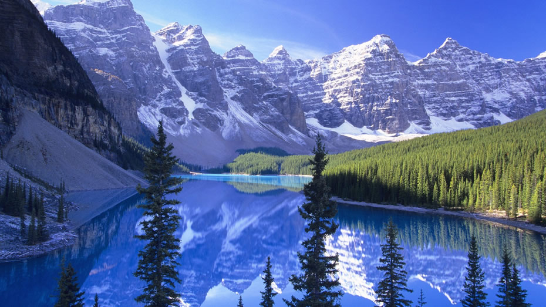
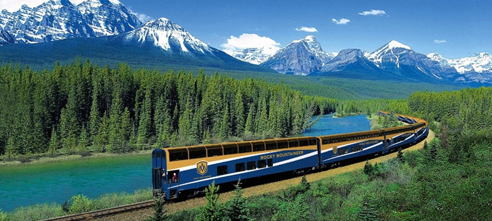

-
Vancouver - Toca do Felix.
-
Vancouver - Ponte, visão a Noite.
-
Linda vista de Vancouver.
Turísmo

Passear pela cidade de Vancouver é bem simples e existem diversas formas, como citaremos abaixo:
O metrô de Vancouver não é 100% subterrâneo, por isso, não costuma ser chamado de metrô e sim de SkyTrain, esse é o nome da empresa que presta o serviço. São três linhas principais: Expo Line, Millenium Line e Canada Line. O transporte público é dividido em três zonas que cobrem o Centro e grande parte do subúrbio. A cozinha oriental é fortemente representada nos restaurantes de Vancouver. Ótima qualidade e variedade. A cidade foi precursora do movimento Ocean Wise, que visa a produção sustentável de pescados e frutos do mar. Restaurantes participantes exibem, com orgulho, o símbolo do programa em seus cardápios. Além disso, a cidade está a cerca de 400 quilômetros de Okanagan Valley, o segundo maior polo produtor de vinhos do Canadá, depois da região de Niágara. Comidas de rua são outro destaque local. Tudo começou quando chefs renomados e uma nutricionista bolaram um programa para oferecer comida de qualidade nas carrocinhas. O resultado foi satisfatorio, hoje temos boas ofertas. As originais e cópias elaboradas por outros chefs famosos. Hot-dogs têm agora versões invocadas como o Japadog e o fish & chips britânico tomou conta de Vancouver.
Montanhas, Lagos e clariares

O Trem Canadian da Via Rail fará você reencontrar a nostalgia dos anos 50. Este trajeto é marcado por várias paisagens belíssimas e românticas. Passarão pela cosmopolita Vancouver, Kamloops, pelos parques nacionais de Jasper e Banff! Esse pacote destaca-se pela pernoite à bordo do trem, o fascinante Lake Louise, um passeio de Ice Explorer sobre o glacial Athabasca e a subida na Gôndola de Banff onde terá uma deslumbrante vista das Moantanhas Rochosas Canadenses.
Expresso das Montanhas Rochosas

Itinerário ideal para turistas que têm pouco tempo para as férias, mas desejam aproveitar ao máximo a viagem, conhecendo as principais atrações do oeste Canadense. Este roteiro, de apenas uma semana, leva os passageiros a Calgary, ao Parque Nacional de Banff, às Montanhas Rochosas, ao Parque Nacional de Jasper, passa pelo Parque Nacional de Mont Robson e pelo interior da Colúmbia Britânica. A viagem continua através do imponente Fraser Canyon e termina na linda cidade costeira de Vancouver, considerada uma das melhores cidades no mundo para se morar.